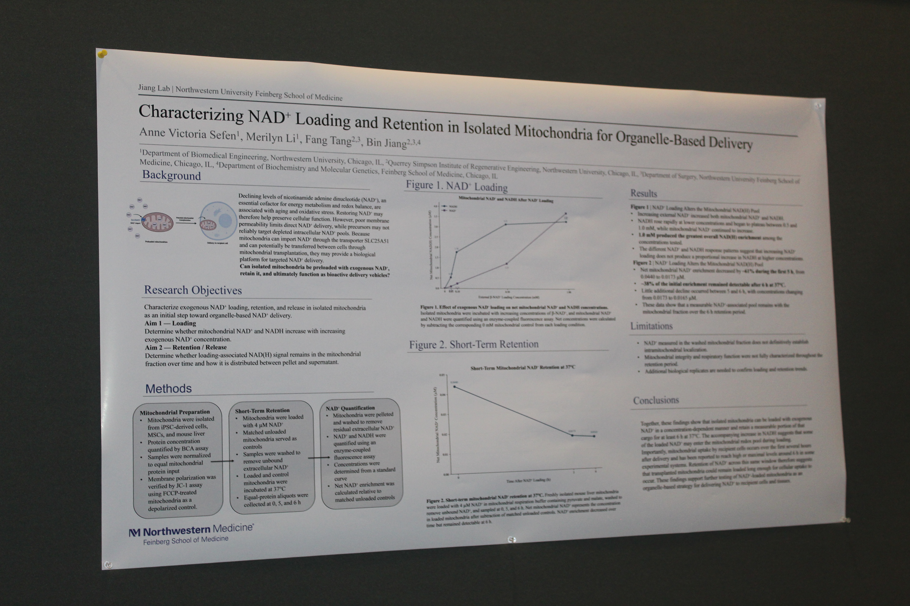

01 · Biomedical Research
Mitochondrial NAD⁺ Loading & Retention
Investigating how isolated mitochondria take up, retain, and release exogenous NAD⁺ under conditions relevant to mitochondrial transplantation.